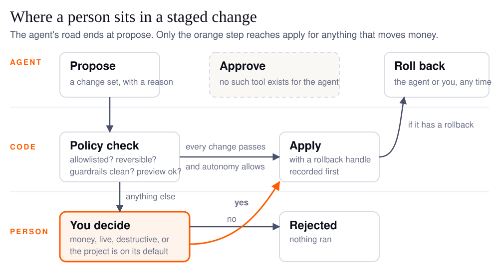
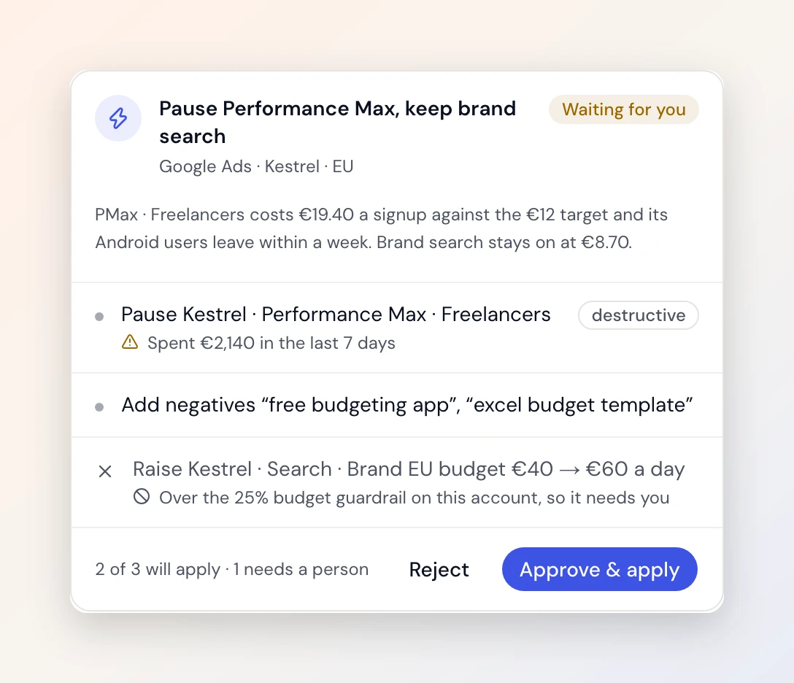

Human in the loop means a person sits between what an AI agent proposes and what actually changes in your accounts. For a marketing agent the useful version is narrower than the phrase suggests: the agent reads, compares and drafts the change on its own; anything that moves money, goes live for every visitor, or cannot be fully undone waits for you; and the waiting is enforced by code the model cannot talk its way past, not by a sentence in its instructions asking it to be careful.
An agent that notices a campaign burning budget on eight search terms with no conversions, and fixes it, is the thing you would pay for. The same agent fixing it at 3 a.m. on a guess is the thing you would uninstall. This guide is about where the line goes, and how to tell whether a product enforces it.
It is easy to get wrong, and I have the receipt. On September 28 I was finishing a post about agent harnesses and the draft said Duct's agent waits for a person before "anything that spends money". I believed it. Then I read the policy file, the only thing that counts, and it said something narrower: budgets and bids always wait, but adding keywords was on the list that may apply without a click, and a new keyword goes in enabled, so it spends. The post was corrected before it shipped, and the gap itself closed on October 30. I come back to it below because it is the most useful example in this guide.
What does human in the loop mean for an AI agent?
It means the agent stops at a defined point and a person decides before anything happens. The decision is a blocking step: the agent proposes, the run pauses, you approve, edit or reject, and only then does the action run. Gumloop's guide puts the everyday version plainly: "agents can pause at important moments and check in with you for approval before taking action" (Gumloop, Agents that know when to ask).
Two neighbors of the phrase matter, because vendors blur them:
| Pattern | Who acts first | Your role | Fits |
|---|---|---|---|
| Human in the loop | the agent proposes, you decide, then it acts | approve, edit or reject before anything runs | money, anything live, anything you cannot fully undo |
| Human on the loop | the agent acts, you watch | monitor and step in after the fact, undo if needed | reversible, low-cost changes you want done at volume |
| Human out of the loop | the agent acts, nobody watches | read the report later | read-only work: a brief, a comparison, a draft |
If you are still sorting out whether the thing you have is an agent at all, the guide to agents, chatbots and automation comes first. The same words also mean people rating model outputs during training, which is a different job. Here it is run time: one action, in your account, today. Regulators use that meaning too: the EU AI Act's Article 14 requires that overseers be able "to intervene in the operation of the high-risk AI system or interrupt the system through a 'stop' button" (Article 14, Human oversight). Your ad account is not a high-risk system under that law. It is still your money.
Which marketing actions should always wait for a person?
The test is not "is it reversible" but "what does a mistake cost before you notice, and does undo give that back". Tony Garcia, CIO and CISO at Infineo, puts it in one line: "The simple answer is what can be unwound versus what can't" (TechTarget, The human in the loop is falling asleep, September 4, 2026). Marketing adds a twist: some settings revert cleanly while their consequences do not.
The list for a Google Ads, GA4 and Tag Manager stack, with Duct's default read from the policy file, not the landing page (what each connector can change is on the integration pages, and the wider picture is in the guide to AI agents for marketing):
| Action | Undo gives back | Cost of a wrong one before you notice | Duct today |
|---|---|---|---|
| Read a report, draft a brief | nothing to undo | none | runs alone |
| Add a note to the analytics timeline | everything | none | may auto-apply |
| Add negative keywords | the keyword list, not the traffic you blocked | lost clicks for a day | may auto-apply |
| Add new keywords | the keyword, not the spend, and bidding may re-enter learning | real money | always waits (since October 30) |
| Create a GA4 key event or audience | everything | muddled conversion counts | may auto-apply |
| Edit a Tag Manager tag in the workspace | everything, nothing is live yet | none | may auto-apply |
| Pause or enable a campaign | the setting; spend stops or starts instantly | a day of zero or double spend | always waits |
| Change a budget or a bid | the setting; Smart Bidding's learning does not come back | real money, plus up to a week of worse bidding | always waits |
| Publish a Tag Manager version | the previous version is republished | the live site changes for every visitor | always waits, flagged destructive |
| Delete a key event, archive an audience | partly; audience membership rebuilds from zero | tracking gaps you discover a month later | always waits, flagged destructive |
The learning-period row is the one marketers know and software people miss. Google says Smart Bidding shows learning status "when you make major structural changes", keywords and bidding included, and that it "never lasts more than 7 days" (Google Ads Help, About Smart Bidding learning). Rolling the bid back restores the number, not the week.
Google draws the line in the same place for its own automation: auto-applied recommendations keep a "History" tab, and "Budget raising isn't included in this iteration of auto-apply recommendations" (Google Ads Help, About applying recommendations automatically). The platform that sells the ads will not raise your budget without a click. Neither should an agent you downloaded.
Why does approving everything make the gate useless?
Because a person asked to approve everything stops reading. Anthropic measured it on Claude Code, where every risky command used to prompt: "in practice users accept 93% of them anyway" (Anthropic, How we built Claude Code auto mode, March 25, 2026). A gate with a 93% yes rate is a reflex, and a reflex is what a confident model walks straight through.
AWS's guidance for agents lists it as the first anti-pattern: "Routing all agent actions through human review regardless of risk level, creating reviewer fatigue and rubber-stamp approvals" (AWS Agentic AI Lens, AGENTSEC04-BP02). Its answer, NeuralTrust's and mine is tiers: "Let read-only and easily reversible actions run without a prompt" (NeuralTrust, Human-in-the-Loop AI Agents: 2026 Guide, October 14, 2026), and keep the interruption for the rows that cost money or go live.
Trust, when it comes, looks like supervising rather than stamping. Anthropic's study of agent autonomy found newer users "employ full auto-approve roughly 20% of the time", rising past 40% with experience, while experienced users also "interrupt in around 9% of turns": "effective oversight doesn't require approving every action but being in a position to intervene when it matters" (Anthropic, Measuring AI agent autonomy in practice, February 18, 2026).
How is the gate enforced if the model is just told to ask?
A gate written in the prompt is a wish. A gate written in code is a rule. This is the question to ask any vendor. There are three ways to build "the agent asks first", and one of them holds when the model is having a bad day.
| How the gate is built | What stops a wrong action | What happens when the model is wrong about risk | Where the human sits |
|---|---|---|---|
| Told to ask (a line in the prompt) | the model's judgment | the action runs | in the loop, in theory |
| Cannot act (no tool exists to apply) | the absence of the tool | the change sits in "proposed" until a person clicks | in the loop, by construction |
| Acts, then reports | nothing before the fact | the action runs; you see it in a log | on the loop |
Models are not reliable judges of when to ask. HiL-Bench, built to test exactly this, found that "no frontier model recovers more than a fraction of its full-information performance when deciding whether to ask" (HiL-Bench, arXiv 2604.09408, April 2026). The first row is the one to be suspicious of, and it is the one most products ship, because it is one sentence of work.
Duct uses the second row. The agent has four tools for changing things: list the operations it may propose, propose a change set, check a set's status, roll one back. There is no fifth. The docstring of the tools file says it in one line: "There is no approve or apply tool." The agent can write a paragraph on why the budget should go up. It cannot make the budget go up, because the thing that would do that is not in the list of things it can call.

Whether a proposed set waits for a click or applies on its own is decided in one policy file, once, in rules short enough to read in a minute:
- A change may apply without a click only if it is on a short allowlist, is not flagged destructive, has a rollback, passed the account's guardrails, and its preview succeeded.
- A set applies without a click only if an agent proposed it, the project's autonomy is set to assisted or auto, and every change in it passes. One destructive change holds the whole set for review.
- Destructive operations never auto-apply at any setting. The file calls this "absolute" and means it.
- Raising a project from assisted to auto changes how often the agent interrupts you with questions. It does not widen what may apply; the allowlist is identical at both levels. I ship a setting called "auto" that is mostly a politeness setting, which I find funny and also correct.
Tests hold each of those: test_execution_policy.py checks that one destructive change holds a whole set for a person and that a project on its default never auto-applies even a clean set; test_execution_apply_safety.py checks that two requests on one approval apply once, and that a change whose target moved since you approved it is held back. A rule with a test is a rule. A rule in a prompt is a hope.
Now the gap. The policy's own comment says budget, bid and status changes "stay OFF the allowlist until numeric guardrail limits (max % delta, absolute caps) exist", because they move money. Adding keywords was on the allowlist anyway, and a new Google Ads keyword goes in enabled, so it can spend. My September review of the flow listed this as its first gap and first fix (Approvals and autonomy for execution, G1), and on October 30 it shipped: adding keywords now waits for a person at every setting, and a test fails if anything that spends ever lands on the list again. So the honest sentence is now the simple one: Duct asks before every budget, bid, pause, new keyword and publish. On the default setting nothing applies without you. That is the setting I run.
What should the approval card show?
The exact change, what it is now, why the agent wants it, what undo will and will not give back, and who approved it when. AWS names the failure mode as a second anti-pattern: "Providing reviewers with insufficient context (the proposed action only, without the reasoning chain, data sources, or potential consequences), turning review into a formality" (AGENTSEC04-BP02). A card that says "Apply 3 changes?" is a yes button. A card that says "8 terms cost €120 in 30 days with 0 conversions; add them as negatives; undo restores the list" is a decision.

Duct's card shows each change against the current value read at preview time, the agent's reason in its own words (the tool description tells the model "the user reads it in the review card"), the guardrail result and a destructive badge. Two things it does not do yet, from the same September review: you cannot edit a proposed budget on the card, only approve or reject the set, and a rejection carries no reason, so nothing stops the agent proposing the same thing next week. Both are on the list. I would rather tell you than have you find out.
Saying no is the simple part: the set moves to rejected and nothing ran. Saying yes and regretting it is the part to check before you trust any product. Duct records a rollback handle at apply time for every change that has one, and the rollback tool reports, rather than skips, any change it cannot undo. Republishing the old Tag Manager version is a real undo. Restoring a budget is a real undo for the number and not for the learning period, and I would be lying if I said otherwise.
FAQ
What does human in the loop mean in AI?
At run time it means an AI system pauses at a defined point so a person can approve, change or reject what it is about to do before it does it. The person is a blocking step, not a spectator. The same phrase is also used for people rating model outputs during training, which is a separate practice with the same name.
What is the difference between human in the loop and human on the loop?
In the loop, the agent proposes and waits; nothing happens until a person decides. On the loop, the agent acts first and a person watches, with the power to stop it or undo it afterwards. Most good agent products use both: in the loop for money and anything live, on the loop for reversible, low-cost changes at volume.
Should every AI agent action require human approval?
No. Anthropic measured that people approve about 93% of permission prompts, which turns the gate into a reflex, and AWS lists routing every action through review as an anti-pattern. Reserve approval for actions that move money, go live, or cannot be fully undone, and give everything else an undo button instead.
Can an AI agent change my Google Ads budget without asking?
It depends entirely on how the gate is built, so ask the vendor where the rule lives. In Duct, budget, bid, pause and publish changes always wait for a person at every autonomy setting, and no tool exists that lets the agent approve or apply a change. Google's own auto-apply recommendations also exclude budget raising.